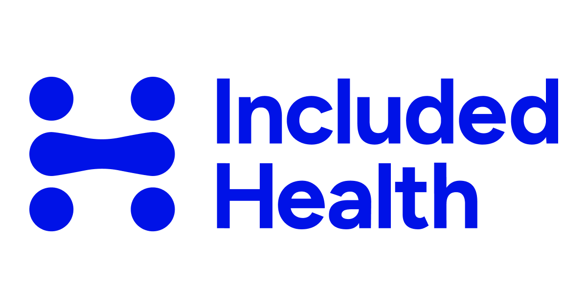

IncludedhealthClinical Pharmacist
As a remote Clinical Pharmacist at Included Health, you will play an invaluable role in ensuring patients' clinical needs, especially pharmacy-related, are addressed with industry-leading interventions. You will work directly with members across the United States, collaborating with a multidisciplinary team of providers, nurses, social workers, behavioral health specialists, and care coordinators to deliver high-quality, evidence-based care.
In this role, you will interact directly with members, using your expertise to support those enrolled in Included Health's Case and Care Management and Virtual Primary Care Programs, as well as other product offerings. Your responsibilities will include pharmacy benefits navigation, treatment guidance, medication support, and chronic disease management. Interventions may be delivered directly by Included Health or through local care, community resources, or other available plan benefits, with your guidance and collaboration with the broader clinical team.
As Included Health seeks to improve both quality and cost outcomes for populations under our care, you will also have the opportunity to collaborate with clinical leadership to develop innovative pharmacy interventions, assess internal and external pharmacy solutions, and contribute to strategies that improve the health of entire populations.
Responsibilities:
-
Comprehensive Medication Reviews and Medication Reconciliation post-discharge for our Virtual Primary Care and our Complex Care and Case Management members
-
Standing Orders and Medication Therapy Management: Collaborate with our Virtual Primary Care team and their patients to enhance chronic disease management outcomes. You will recommend or initiate therapies and work longitudinally with patients to ensure they are doing well, and adjust as indicated.
-
In collaboration with our greater clinical pharmacy team, you are the subject matter expert for your colleagues and our members on pharmacy benefits navigation
-
You may develop and present educational content to members through group classes, as well as provide training and presentations for our internal teams.
-
You may support our overall pharmacy strategy in collaboration with the pharmacy team and other key stakeholders across the company
What You Bring
-
An empathetic approach to patient care, with the ability to support members and their families during challenging times.
-
Strong collaboration skills, both verbal and written, while working with multidisciplinary teams to deliver top-quality care.
-
Comfort discussing a wide range of medical conditions and pharmacy benefits with patients and internal team members.
-
The ability to consistently deliver high-quality care.
-
An excitement for clinical pharmacy growth - we are an evolving and innovative team, and are on a mission to improve the quality of healthcare for everyone.
-
A commitment to strict adherence to HIPAA regulations and patient confidentiality.
Qualifications and Requirements:
- Active pharmacist license in good standing with the Texas State Board of Pharmacy required
-
Multiple state licenses strongly preferred, and the willingness to obtain additional state licenses required. Preference for Arkansas, California, Washington, Colorado, Arizona, and/or Iowa.
-
Doctor of Pharmacy (PharmD) from an accredited program.
-
Board Certification in Ambulatory Care or Pharmacotherapy (BCACP or BCPS) preferred
-
5+ years of experience in primary care, ambulatory care, or a similar clinical setting
-
2+ years of experience with specialty pharmacy and high-cost medications
-
Completion of a PGY1 Pharmacy Residency program preferred
-
Clinical experience in primary/ambulatory care at an integrated health care system and/or health plan required
-
Ability to work business hours in the PST or MST time zone preferred, Monday-Friday 8am-6pm (exact times are flexible based on start and end time)
Physical/Cognitive Requirements:
- Prompt and regular attendance at assigned work location.
- Capability to remain seated in a stationary position for prolonged periods.
- Eye-hand coordination and manual dexterity to operate keyboard, computer and other office-related equipment.
- No heavy lifting is expected, though occasional exertion of about 20 lbs of force (e.g., lifting a computer \/ laptop) may be required.
- Capability to work with leadership, employees, and members in an appropriate manner.